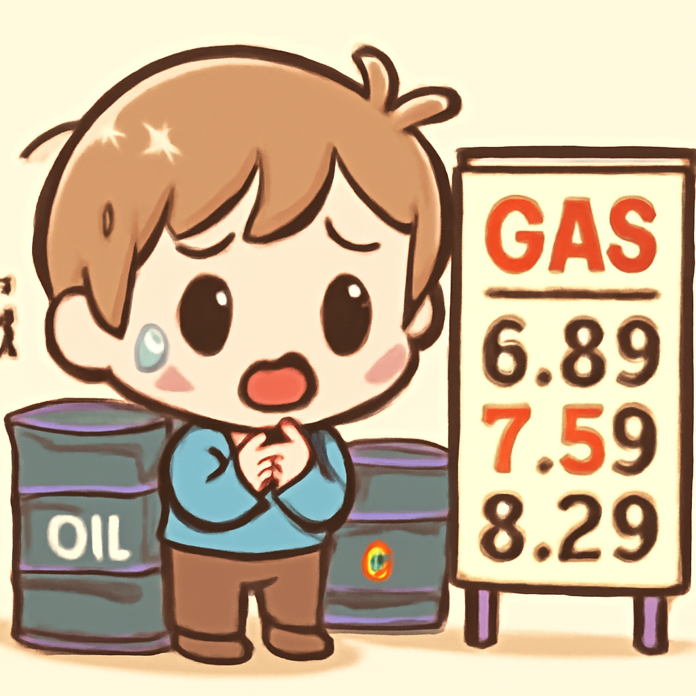
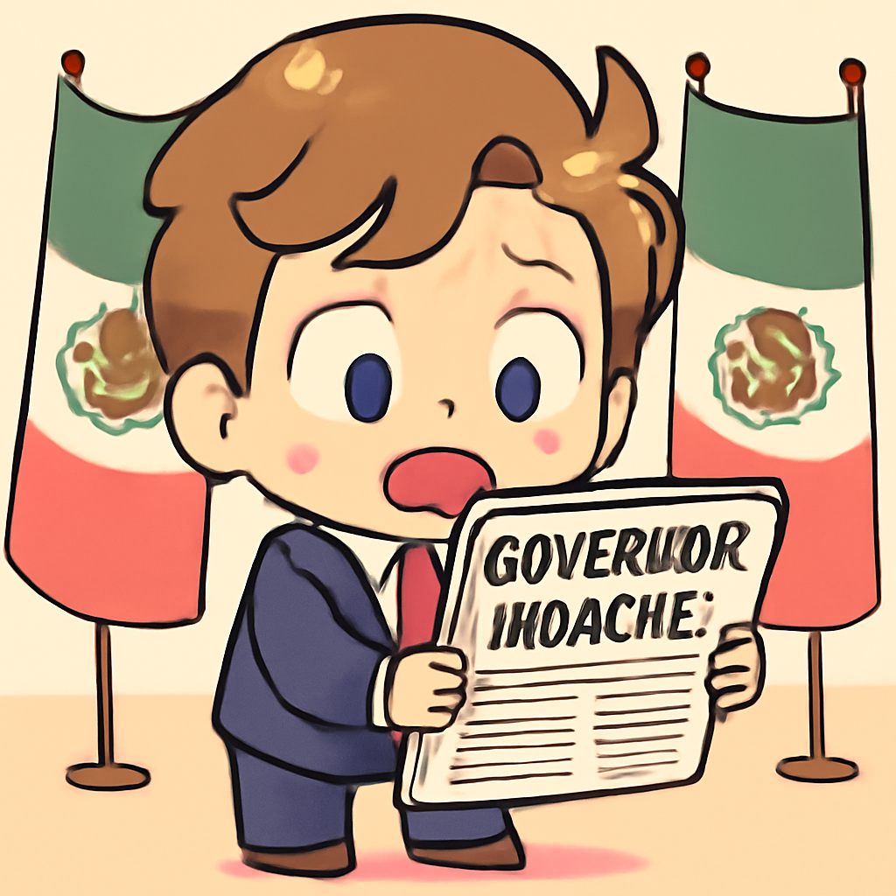
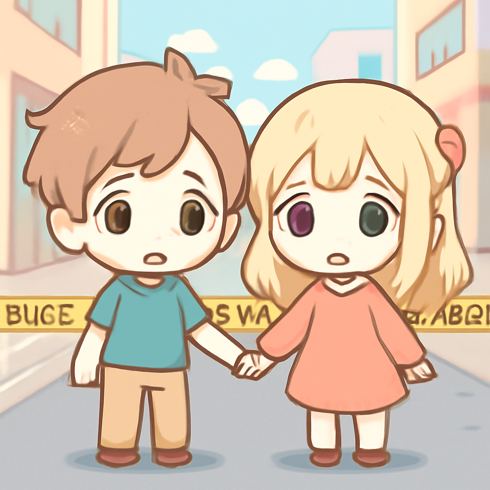
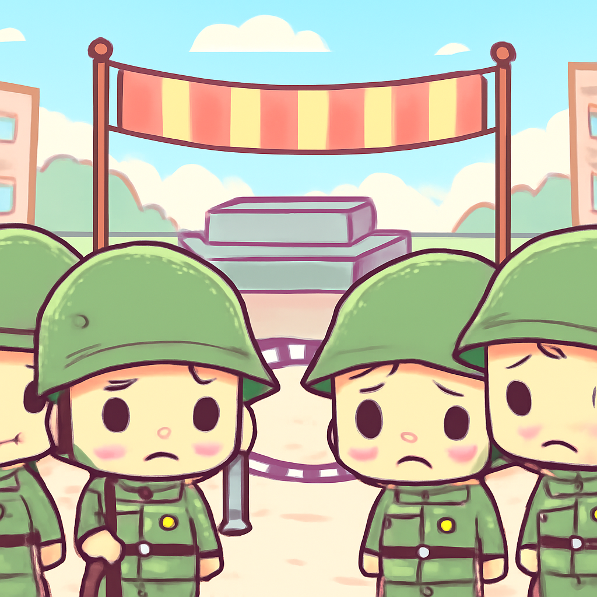

其一 · 美利堅華府 · 油價因伊朗封鎖飆升
美國原油價格突破120美元，因伊朗局勢不確定

在美國華府，原油價格最近升破120美元大關，因為中東局勢緊張，特別是伊朗的封鎖令市場感到不安。這一波價格上漲可能會影響全球經濟，尤其是能源依賴型國家。希望我們的油錢別被這波漲價沖刷光！
🔗 原始新聞 ↗
2026-04-30 · 以古觀今，以笑抗愁
美國原油價格突破120美元，因伊朗局勢不確定

在美國華府，原油價格最近升破120美元大關，因為中東局勢緊張，特別是伊朗的封鎖令市場感到不安。這一波價格上漲可能會影響全球經濟，尤其是能源依賴型國家。希望我們的油錢別被這波漲價沖刷光！
🔗 原始新聞 ↗
墨西哥檢方指控州長與毒販合作，影響政治局勢

在墨西哥，檢方指控Sinaloa州州長Rubén Rocha Moya與希門尼斯卡特爾有長期共謀關係，這可能影響未來的政治局勢。若真有其事，這可說是政治劇情的翻轉，讓人不禁想問：這部劇一季幾集？
🔗 原始新聞 ↗
倫敦猶太社區發生刺傷事件，警方介入調查

在倫敦的猶太區，兩名男子遭刺傷，目前情況穩定，警方已經將此事件視為恐怖襲擊。這引發了社區的擔憂，並提醒大家安全意識的重要性，希望未來能多一點和平，少一點恐懼。
🔗 原始新聞 ↗
巴拉圭政府重申與台灣的友誼，抵抗中國壓力
在瓜地馬拉，巴拉圭政府表示不會放棄與台灣的關係，儘管中國對其施加壓力。這一立場顯示了巴拉圭對台灣的支持，也讓人對兩國未來的合作充滿期待。希望這樣的友誼能持續，讓世界看到真誠的聯結！
🔗 原始新聞 ↗
俄國因烏克蘭戰爭縮小勝利日慶祝活動

在莫斯科，俄國因烏克蘭戰爭的影響，宣布今年的勝利日遊行將不再展示重型軍事裝備。這顯示了戰爭帶來的實質影響，也讓人反思戰爭的代價。希望大家能在和平的氛圍中慶祝，而不是在武器的陰影下。
🔗 原始新聞 ↗